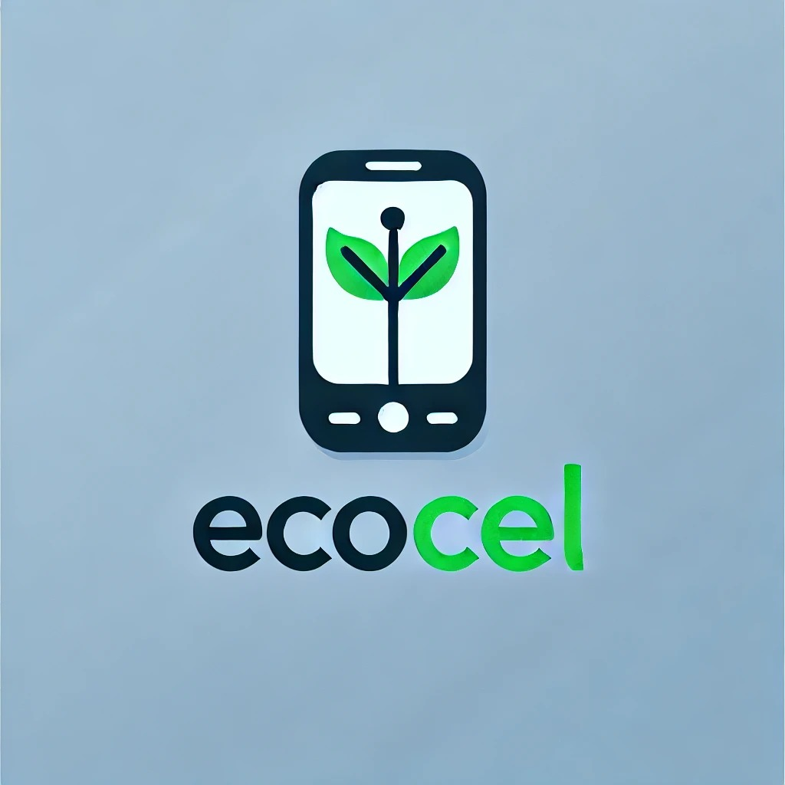

Desenvolver uma plataforma online que ajude os consumidores a escolher celulares de forma consciente, priorizando durabilidade, sustentabilidade e redução do desperdício eletrônico.
Avaliação 1
Ótimo serviço, muito satisfeita com o atendimento e os produtos!
Maria Silva
15/09/2023
15/09/2023
Avaliação 2
Produtos incríveis e sustentáveis. Super recomendo!
João Pedro
12/10/2023
12/10/2023
Avaliação 3
Empresa muito comprometida com a sustentabilidade. Adorei!
Ana Costa
10/11/2023
10/11/2023